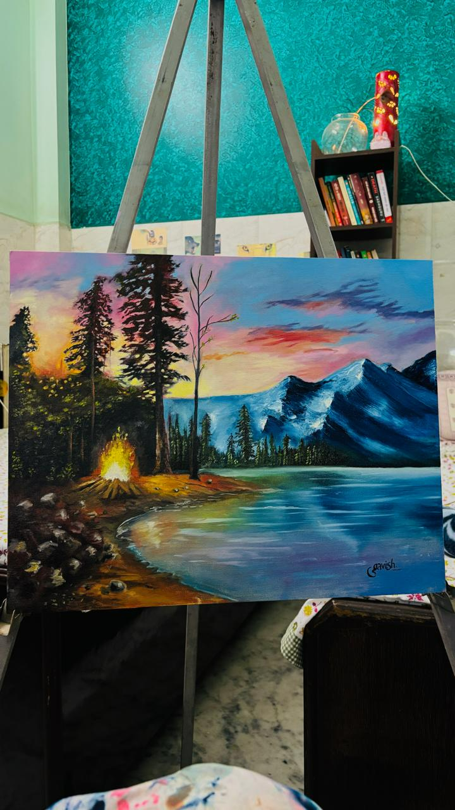

Chapter 05 — Side Quests
Paintings.
The quieter half of my brain — where logic gives way to color.

🎨
More on the way
Send over photos of your other paintings — with titles, medium, and a line about each — and I'll add them to the gallery.